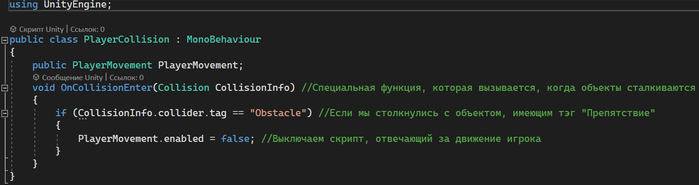
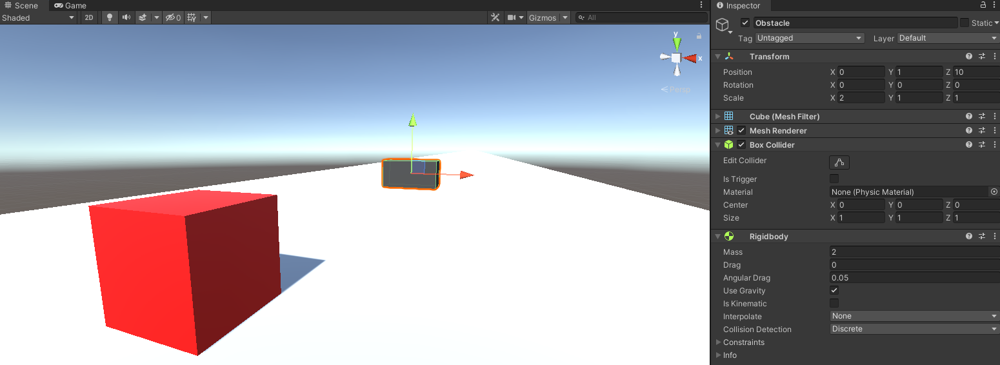
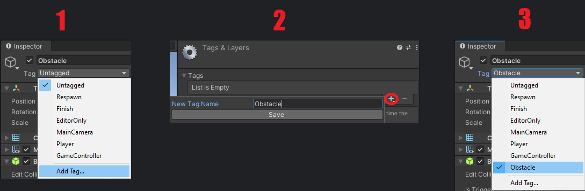
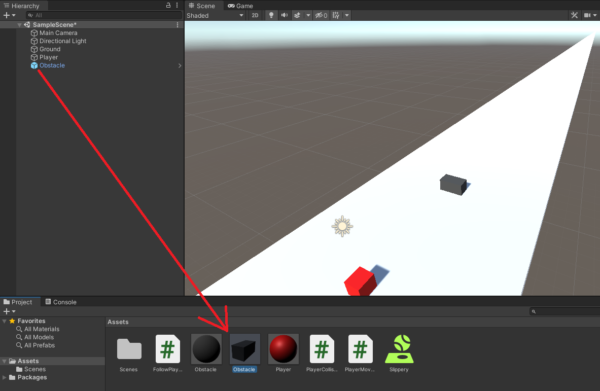
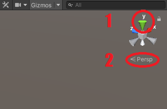
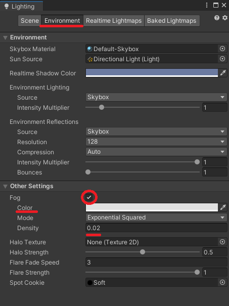

Если ты не можешь проиграть, то в победе нет никакого смысла. Поэтому давай усложним нашу игру: добавим препятствия и столкновения с ними. И, конечно же, начнём с добавления в нашу игру нового скрипта под названием PlayerCollision, который будет отвечать за столкновения с различными объектами

Теперь, когда наш игрок врежется в преграду, он остановится. Остаётся лишь добавить эти преграды. Для этого создадим новый 3D объект: Куб. Разместим его на платформе (Transform Y=1) чуть спереди от игрока. Из-за того что у препятствия по умолчанию белый цвет, то оно сливается с платформой. Поэтому нам нужно создать новый материал, изменить ему цвет и добавить на наш новый кубик. Также нужно изменить его имя на Obstacle, а размер по оси X на 2 (Transform->Scale->X=2). Осталось в Инспекторе нашего препятствия добавить компонент Rigidbody, в котором нужно увеличить Массу(Mass) до 2. В итоге должно получится что-то такое

Чтобы наш код работал, нам нужно добавить преграде тэг Obstacle. Для этого сверху в поле Инспектора Tag выбираем Add Tag, нажимаем + и добавляем новый тэг Obstacle. Сохраняем и назначаем его нашему препятствию

Осталось только перетащить наш скрипт PlayerCollision на игрока, а в поле нового скрипта Player Movement перетащить наш старый скрипт с таким же названием. Теперь, если мы нажмём кнопку Play, то убедимся в том, что при столкновении с препятствием наш игрок действительно останавливается. Наконец настало время для творчества и создания своего первого уровня. Чтобы игра была сложной и интересной нам понадобится ещё какое-то количество таких же препятствий. Для того чтобы не создавать новый объект каждый раз, можно сделать Префаб этого объекта. Сделать это очень просто: из окна Иерархии нужно нашу преграду (Obstacle) перетащить вниз в Панель проекта, где находятся наши скрипты и материалы

Благодаря этому сейчас ты можешь добавлять новые препятствия на сцену, просто перетягивая этот префаб. Но, чтобы тебе было проще создавать свой уровень, нужно в верхнем правом углу сцены нажать на зелёную ось Y и чуть ниже изменить Перспективу на Iso

Дальше дело за тобой. Добавляй препятствия, тем самым создавая свой уровень, но проверяй в игровом режиме возможность прохождения твоего уровня и регулируй его сложность. После этого нам остаётся только добавить небольшой туман, чтобы игрок не мог видеть все препятствия сразу. Это можно сделать в окне Lighting (Window->Rendering->Lighting). В открывшемся окне выбираем Environment, затем ставим галочку напротив Тумана (Fog), выбираем его цвет (Color) и увеличиваем его частоту (Density) до 0.02

Не забудь всё сохранить и переходи к предпоследнему уроку